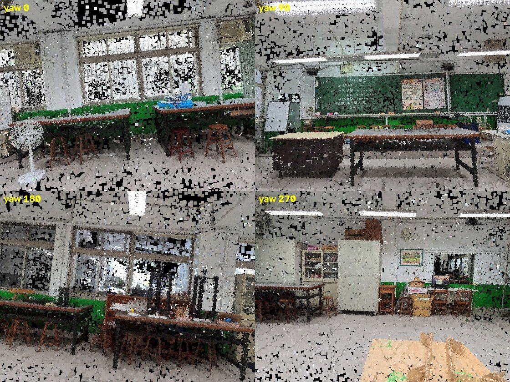
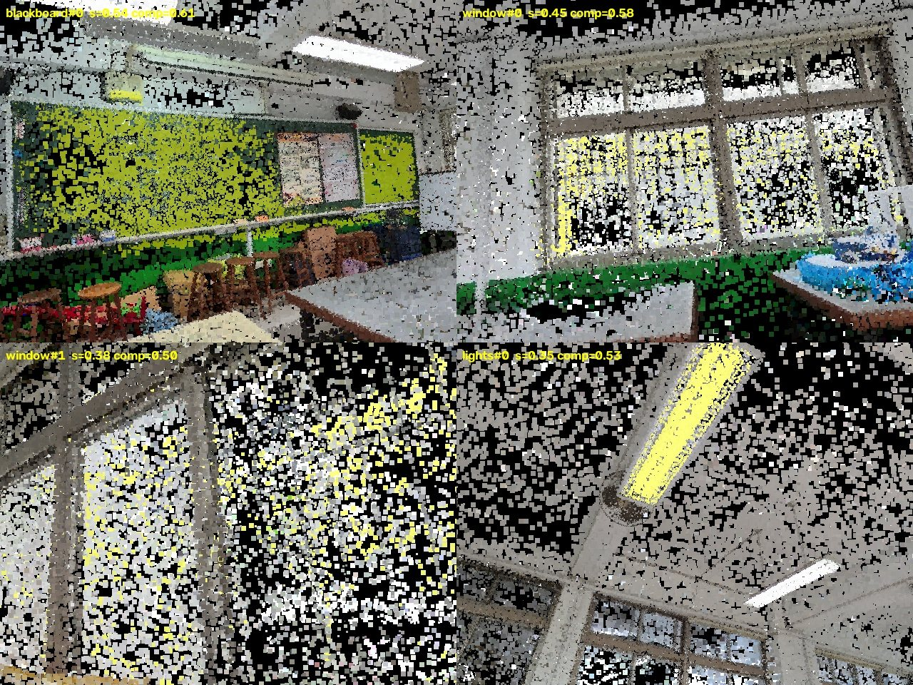

用 3DGS 掃描一間教室之後，若要問「教室裡有幾支日光燈？」「黑板旁邊有什麼？」， 一般做法是把原始拍攝的畫面丟給 VLM。但原始畫面是自拍桿沿著地面水平環繞拍的—— 天花板的燈永遠在畫面邊緣、被工作檯遮住的東西永遠看不到。
GaussExplorer 這類方法的核心是：既然已經有 3DGS，就為每個問題生成一個最適合回答它的視角， 而不是在既有畫面裡挑一張最不差的。
驗證方法很簡單但決定性：日光燈一定在天花板。 在點雲裡找出高亮度高斯，投影後統計它們落在畫面上半的比例：
| 相機設定 | 燈落在畫面上半 | 判定 |
|---|---|---|
up=[0,-1,0]（原本） | 0% | ✗ 上下顛倒 |
up=[0,+1,0]（修正） | 100% | ✓ 正確 |
根因：場景是 y-down（樓面 y=+1.91、天花 y=−1.10），而 look_at 的第三個參數
是「相機 y 軸」＝影像向下方向，我卻餵了「世界向上」。

第一版把四項指標加權相加，其中「目標占畫面比例」設成占 6% 就滿分。 結果最佳解變成把鏡頭貼到目標的一小塊碎片前面：
| 查詢 | 分數 | 實際看到目標的比例 |
|---|---|---|
| window | 0.58 | 2.8% |
| bench | 0.62 | 10.8% |
任何一項可以被犧牲到接近 0，仍然靠其他項拿高分。
兩個修正。第一，改成乘性：任一項趨近 0 則整體歸零，無法互相補償。 第二，目標要先切成 3D 連通分量（物件實例）—— 因為查詢問的是「黑板」這一個物件，不是「房間裡所有綠色的東西」； 不分群的話，目標散落全室，單一視角的完整度天生上不去。
效果：window 的完整度從 2.8% 拉到 46%。
<4% 太小看不清 → 線性升 4~35% 平台(對 VLM 都夠用) >35% 貼太近/易裁切 → 線性降,75% 歸零
健康指標：每個實例的前三名都是同一機位的小變化 （黑板 0.541 / 0.532 / 0.495），代表評分曲面平滑，不是被單點鑽出來的尖峰。
顏色規則會把日光燈誤判成窗戶（兩者都很亮）。但分群後已經知道每個實例的實體尺寸， 用尺寸就能乾淨分開，而且否決理由可稽核：
✓ lights#1 dims=[1.25, 0.29, 0.12] 離地 3.10m ✗ window#2 dims=[1.26, 0.34, 0.12] ← 不符:最大邊 > 1.5m / 面積 > 1.5m² ✗ bench#0 dims=[11.20, 10.03, 0.55] ← 不符:未跨滿全室(最大邊 < 5m)
| 量測 | 修正前 | 修正後 | 對照實物 |
|---|---|---|---|
| 房高 | 3.79 m | 3.01 m | 校舍教室 3.0~3.2 m |
| 天花板 y | −1.86（天空） | −1.10 | 燈面離地 3.06 m |
| 工作檯面高 | 0.91（其實是厚度） | 0.75 / 0.89 / 0.92 / 1.07 m | 標準檯面 0.75~0.9 m |
| 日光燈管長 | 1.25 ~ 1.28 m（全程正確） | 4 呎管 = 1.2 m | |
三個修法：室內量測只用房間中央 50%；天花板取密度峰值而非極端百分位 （官方 3DGS 輸出有針狀高斯浮在天花之上）；所有規則改用離地絕對公尺。

| 查詢 | 分數 | 完整度 | 機位 / 姿態 |
|---|---|---|---|
| blackboard #0 | 0.536 | 0.61 | (+2.7,−2.1) yaw 60° pitch 0° |
| window #0 | 0.446 | 0.58 | (+0.4,+1.7) yaw 0° pitch +12° |
| window #1 | 0.383 | 0.50 | (+2.7,+3.6) yaw 30° pitch +12° |
| lights #0 | 0.346 | 0.53 | (−2.0,−0.2) yaw 150° pitch +35° |
候選視角 1800 個（5×5 機位 × 12 方位 × 6 俯仰），每個都要渲染評分。
原本的 per-gaussian Python 迴圈是「每個查詢各渲染一輪」，900 視角 × 4 查詢要跑近半小時；
改成向量化 z-buffer（lexsort + unique 取每像素最近點）
並讓單次渲染供所有查詢共用後，1800 視角 × 8 實例只要 169 秒。
向量版與原版做過等價性驗證：覆蓋率相同、深度中位差 0.00 cm、 差異 >5cm 的像素 0%、顏色 99.7% 一致（差異來自深度並列時的排序）。
~/3d/gauss-explorer/：
explorer.py（渲染／房間座標）·
fastrender.py（向量化 z-buffer）·
instances.py（3D 連通分量）·
verify_instance.py（幾何檢核）·
query_v2.py（查詢導向評分）